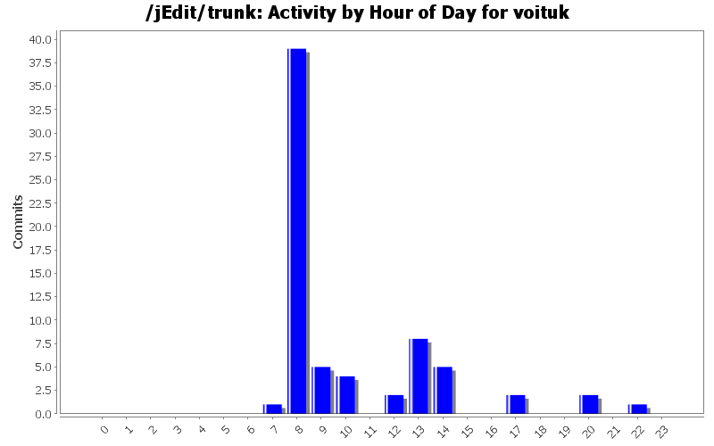
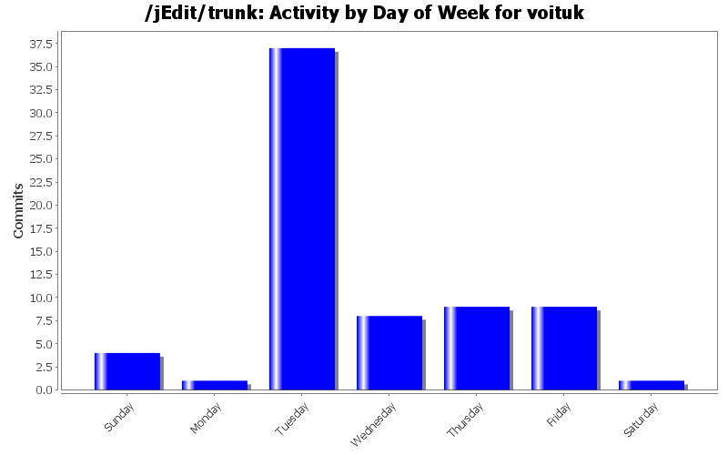
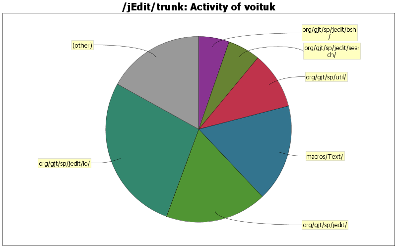

| Directory | Changes | Lines of Code | Lines per Change |
|---|---|---|---|
| Totals | 69 (100.0%) | 372 (100.0%) | 5.3 |
| org/gjt/sp/jedit/io/ | 5 (7.2%) | 102 (27.4%) | 20.4 |
| org/gjt/sp/jedit/ | 9 (13.0%) | 66 (17.7%) | 7.3 |
| macros/Text/ | 4 (5.8%) | 63 (16.9%) | 15.7 |
| org/gjt/sp/util/ | 8 (11.6%) | 37 (9.9%) | 4.6 |
| org/gjt/sp/jedit/search/ | 1 (1.4%) | 21 (5.6%) | 21.0 |
| org/gjt/sp/jedit/bsh/ | 12 (17.4%) | 20 (5.4%) | 1.6 |
| org/gjt/sp/jedit/buffer/ | 2 (2.9%) | 15 (4.0%) | 7.5 |
| org/gjt/sp/jedit/gui/ | 6 (8.7%) | 13 (3.5%) | 2.1 |
| modes/ | 6 (8.7%) | 9 (2.4%) | 1.5 |
| / | 5 (7.2%) | 8 (2.2%) | 1.6 |
| org/gjt/sp/jedit/bsh/org/objectweb/asm/ | 1 (1.4%) | 6 (1.6%) | 6.0 |
| org/gjt/sp/jedit/bufferio/ | 1 (1.4%) | 3 (0.8%) | 3.0 |
| org/gjt/sp/jedit/indent/ | 2 (2.9%) | 2 (0.5%) | 1.0 |
| org/gjt/sp/jedit/help/ | 2 (2.9%) | 2 (0.5%) | 1.0 |
| org/gjt/sp/jedit/bsh/commands/ | 1 (1.4%) | 2 (0.5%) | 2.0 |
| org/gjt/sp/jedit/textarea/ | 1 (1.4%) | 1 (0.3%) | 1.0 |
| org/gjt/sp/jedit/syntax/ | 1 (1.4%) | 1 (0.3%) | 1.0 |
| org/gjt/sp/jedit/browser/ | 1 (1.4%) | 1 (0.3%) | 1.0 |
| doc/ | 1 (1.4%) | 0 (0.0%) | 0.0 |

Added tag templates to Insert_Tag macros
30 lines of code changed in 1 file:
Fixed NPE if no tag specified.
2 lines of code changed in 1 file:
Added support for few nested tags (separated by space) input. For example: "ul li a" will insert <ul><li><a>...</a></li></ul>
19 lines of code changed in 1 file:
Join lines to inprove code readability (sorry for microcommit)
1 lines of code changed in 1 file:
The Task for asynchronous saving local file to disk ommiting VFS API stack.
91 lines of code changed in 1 file:
removed by Matthiew`s request
0 lines of code changed in 1 file:
Added .gitignore file to the ones, who are using 'git svn' while working on jEdit. (like me and sholmy for example)
0 lines of code changed in 1 file:
Hey folks! Are we still using 80 chars/line? Don`t think so!
8 lines of code changed in 3 files:
Organized imports
5 lines of code changed in 1 file:
Added few more CSS properties to KEYWORDS list
3 lines of code changed in 1 file:
Added CSS3 last-child pseudo-class
0 lines of code changed in 1 file:
Minor code refactoring
3 lines of code changed in 1 file:
- Added @since tag to new param-less JEditBuffer.getText() method
- Noted about this metod into API Changes secion of doc/CHANGES.txt
0 lines of code changed in 2 files:
md5() method moved from MictUtilities to StandardUtilities (in according to Matthieu advise)
27 lines of code changed in 3 files:
Added MiscUtilities.md5() method for calculating md5sum of the string
and as result Buffer.calculateHash() method refactored to avoid code duplications.
48 lines of code changed in 2 files:
Added convenience method getText() as alias to getText(0, getLength())
15 lines of code changed in 1 file:
Prevent warning in Ant 1.8
2 lines of code changed in 1 file:
Before this commit, each VFS implementation was cared about backups feature status itself.
Now BufferSaveRequest class cares about this and call VFS::_backup() method if "backup" option enabled only.
5 lines of code changed in 2 files:
Added new Compose_Tag macro docbook xml description
12 lines of code changed in 1 file:
Commented antialiazing text rendering enabled on MacOSX due this discussion
https://sourceforge.net/tracker/?func=detail&atid=100588&aid=2820535&group_id=588
0 lines of code changed in 1 file:
(7 more)